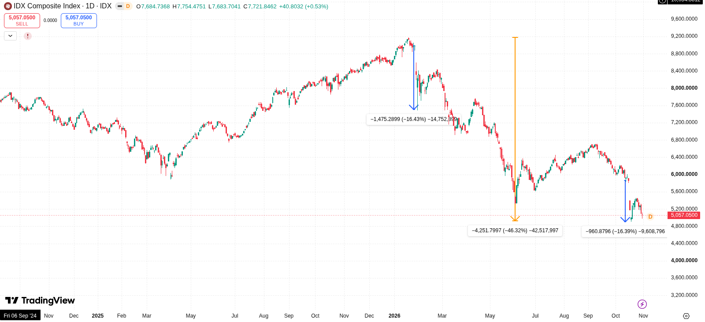
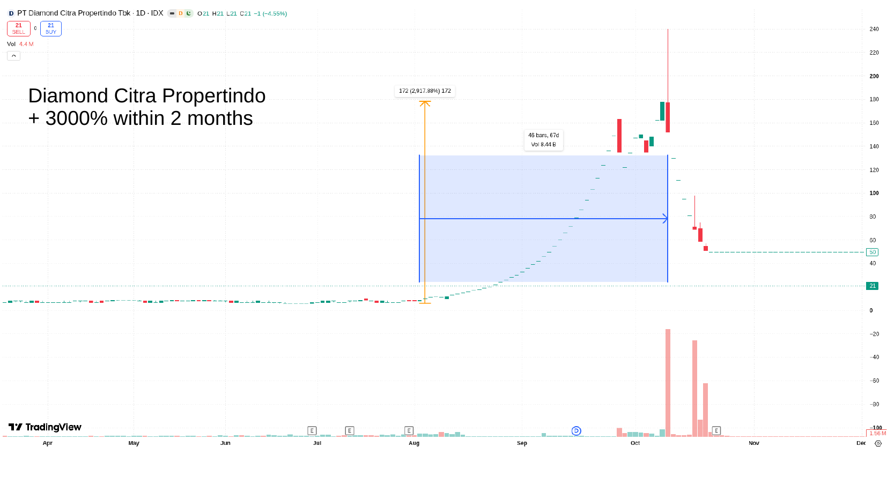
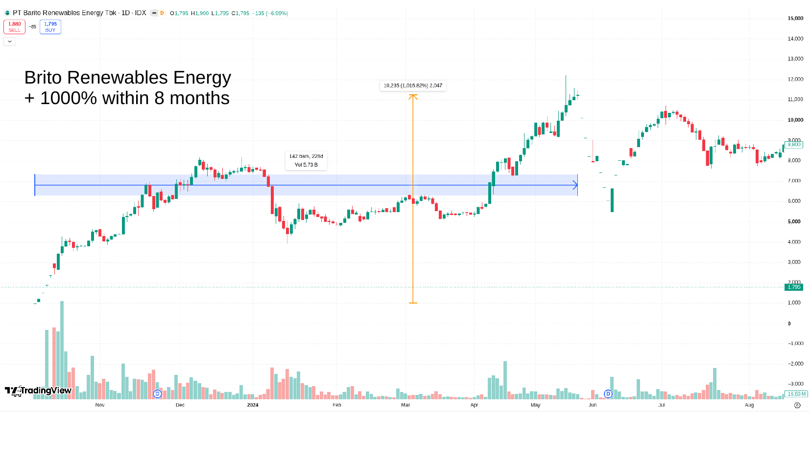
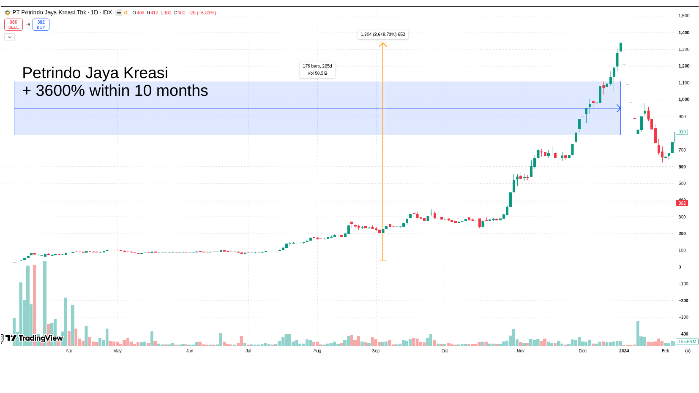

Indonesian Stock Market under a Corrupt Administration
Political background
The Indonesian government faces strong resistance from its people over political corruption, inflation, and devastating forest fires.
Indonesia officially became a democracy after the Suharto dictatorship fell in 1998. However, those in power have never given up their vested interests. Under the dictatorship, cronies, similar to the zaibatsu in Japan and the chaebol in South Korea, held power over the economy. Their companies came to control much of the resources and infrastructure that belonged to the Indonesian people. Power was concentrated among these cronies, and corruption, collusion, and nepotism, known as “KKN”, spread among them and politicians. In 1998, the Asian financial crisis fueled public anger, and the people overthrew the Suharto government.
After the country became a democracy, the Corruption Eradication Commission (KPK) was established in 2002. However, in 2019, during the Jokowi administration, the KPK was weakened and its independence and investigative powers were reduced. The KPK staff became civil servants, which meant the commission lost its independence. After Jokowi, Prabowo (Suharto was his former father-in-law) became president, and corruption has continued under his administration. Against this background, many Indonesian students have taken to the streets to protest against the government, and some of them were killed during clashes with the police.
Stock market
On the financial side, MSCI warned in January 2026 that it might downgrade Indonesian stocks, citing three main concerns. First, the free float of Indonesian stocks is much lower than in other countries. The minimum requirement was only 7.5%. Second, a handful of wealthy individuals own most of the major companies, and ownership structures are not transparent. Third, insiders use a pump-and-dump practice known as “goreng-goreng saham”.
After MSCI's warning, the Jakarta Composite Index (IDX) suffered its worst two-day drop in nearly 30 years, wiping out about $80 billion in market value.The turmoil led to the resignation of IDX chief executive Iman Rachman, followed by the departure of top officials at the Financial Services Authority (OJK).
Then, in October 2026, MSCI proposed reclassifying Indonesia's stock market as standalone. This triggered a capitulation: the index plunged 11.8% on October 16 and 16% over two days.

Goreng saham
Goreng saham is an Indonesian market slang for stock price manipulation. The closest English term is a pump-and-dump scheme. Insiders, often the controlling shareholders working with brokers and nominee accounts, deliberately push up the price of a thinly traded stock. They create the look of strong demand with coordinated buying, wash trades, and hype on social media. Once retail investors pile in, the insiders sell their shares at the top, and the price usually collapses soon after.
Since early 2026, Indonesia's Financial Services Authority (OJK) has stepped up enforcement against these schemes after a sharp market sell-off. Below are three stocks that have drawn scrutiny.
Diamond Citra Propertindo (DADA)
DADA is a property developer with residential and commercial projects in Jakarta and Depok. In 2025, its share price rose about 3,000% in about two months, driven by unconfirmed rumors that Vanguard, Kajima, and Mitsubishi Estate were investing.

Barito Renewables Energy (BREN)
BREN is a renewable energy company, mainly geothermal power. It belongs to the Barito Group, controlled by the tycoon Prajogo Pangestu. In October 2026, OJK found that most of the IPO shares had been planned from the start to go to parties linked to the controlling shareholder, who hid their identities when they placed their orders. This left very little stock in public hands, and a low free float makes a stock easy to push up. BREN rose about 1,000%.

Petrindo Jaya Kreasi (CUAN)
CUAN is a coal and mining holding company, also controlled by Prajogo Pangestu. OJK found the same scheme in its 2023 IPO: affiliated parties hid their identities to secure most of the allocation. The stock went on to rise about 3,600%.
